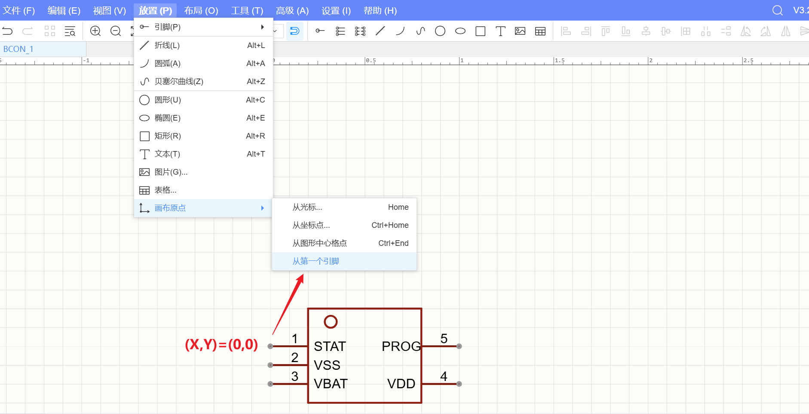
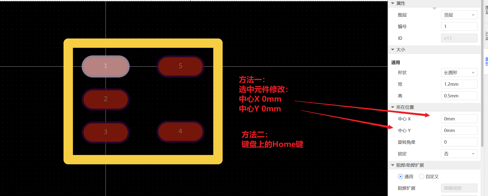
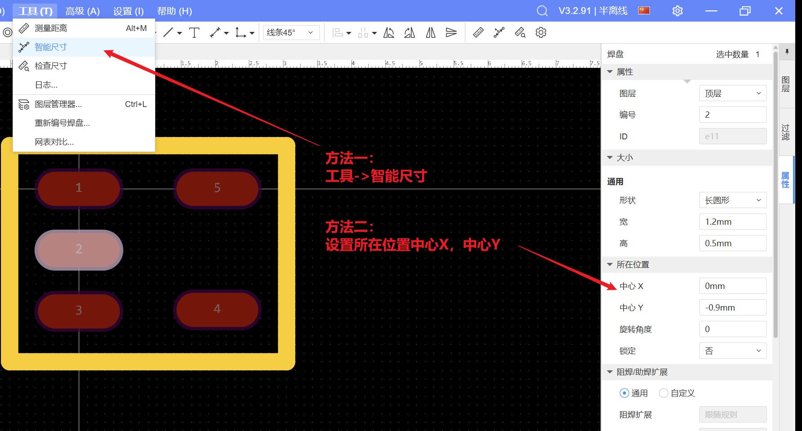
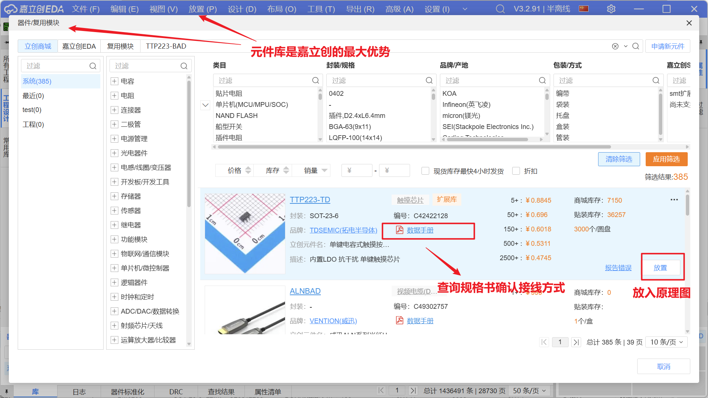

注意事项
元件：画布原点不在图形内部
设置画布原点是为了给PCB板上的所有元件提供一个统一的测量基准，确保生产时贴片机能精确地将元件贴装到正确的位置。
嘉立创创建元件保存的时候，出现“发现某某画布原点不在图形内部”的问题可以用以下方法解决：

封装：设置坐标原点
赛题中的封装设计要求：
- 元器件位于顶层。
- 设置引脚 1 为坐标原点。
- 引脚 1-5 焊盘形状为长圆形，焊盘宽为 1.2mm，高为 0.5mm。
- 引脚 1-5 按照逆时针顺序排列。

封装：设置间距
赛题中的设计图要求焊盘间距0.9mm与2.0mm 
工程：绘制原理图
以触摸小夜灯为例 
- 拉线(
ALT+w)，拉到一半按下TAB，设置线宽 - 走线不走90度
- 查找相似对象->选中一个目标->
Ctrl+F->全部